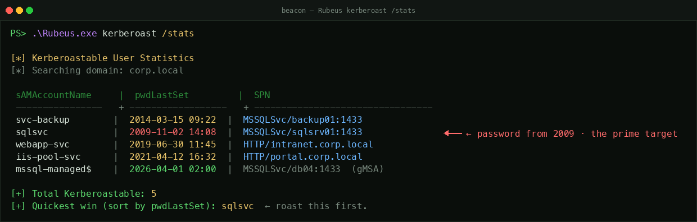

what you actually have#
You ran your roast. hashes.txt looks like this:
That single line carries everything you need. Pulled apart:
The thing that makes this work: Kerberos service tickets are encrypted with a key derived from the target service account's password. The KDC issues a TGS to any authenticated user who asks for it (assuming the SPN exists and the user has a valid TGT). You never had to authenticate to the service itself. You weaponized a feature.
For RC4 (etype 23, the legacy fast-to-crack type), the key literally is the NT hash — MD4(UTF-16LE(password)). For AES (etypes 17 = AES128 and 18 = AES256, much harder to crack), the key is a different derivation: PBKDF2-HMAC-SHA1(password, salt=<upn>@<REALM>, iterations=4096). Different math, different speeds, hashcat modes 13100 / 19600 / 19700 respectively. Old accounts and accounts whose msDS-SupportedEncryptionTypes attribute is unset usually return RC4 — which is why operators ask for RC4 explicitly.
first: roast everything#
If you only have one hash, get the rest first. One run, every Kerberoastable account in the domain. Mentally, the LDAP filter is:
Tooling runs that filter for you:
Important Rubeus flags worth knowing:
/tgtdeleg— pulls a fresh TGT for your session via Kerberos delegation, lets you make requests without using your current token. Looks more legitimate to defenders./rc4opsec— Rubeus skips accounts whosemsDS-SupportedEncryptionTypeshas the AES128 or AES256 bits set (i.e.attr & 0x18 != 0). For the remaining accounts it requests RC4 tickets. Avoids the loud "RC4 requested when AES expected" signal that fires when you ask for RC4 on an account whose attribute says AES-only./user:<username>— targeted, single account./stats— list every Kerberoastable account first without requesting tickets. Helps you pick which to roast./delay:30000 /jitter:25— pace ticket requests over time. The defender-side signature for kerberoasting is "many 4769 events from one source in a short window." Slow it down and that signature dies.
Recon before you roast. List Kerberoastable accounts with /stats and pick the ones whose passwords are oldest. The output looks like this:

sqlsvc is the prime target — old password, RC4-only key likely, and the SPN tells you the host. The 2026 mssql-managed$ is a gMSA — skip it, you won't crack a 240-char random.From a Windows beacon with PowerView, the same survey via LDAP:
Old passwords are weak passwords. A service account whose password hasn't changed since 2014 is the one to roast first. Some haven't been touched since 2009. That's not a joke.
From a Cobalt Strike beacon, the canonical in-memory invocation:
CS 4.5+ also ships a native kerberoast aggressor command that does the same thing without dropping the .NET assembly. The same execute-assembly primitive works from Sliver, Mythic, Havoc, PoshC2 — the OSS C2 frameworks people use when they don't have CS budget. The protocol behavior is identical; only the loader changes.
crack it#
Cracking happens on your hardware, on your network. The DC never sees it. This is the only phase of the entire chain that defenders cannot detect — there are no logs to dampen, no telemetry to evade. Take as much time as you need.
The realistic stats from real engagements:
- Service account passwords are stale. They were set once by a sysadmin and never rotated. 5-15 years is common.
- They follow human patterns.
Service2014!.Company123.servername.Spring2018.P@ssword1. - Rockyou + best64 hits ~30% of Kerberoastable accounts in a typical environment.
- Custom wordlist (service name + year combos + company-specific terms) + OneRule + 24 hours hits ~60%.
- The other 40% are the strong passwords or the gMSAs. See §8.
What you get back: sqlsvc:Sql_Server_2014!. Cleartext.
My personal worst was a MSSQLSvc account whose password was set in 2007. The cleartext was the company name plus that year. Cracked in 12 seconds with a 30-line custom wordlist. Service accounts are time capsules.
msDS-SupportedEncryptionTypes set explicitly), the KDC will return AES-encrypted tickets — type 17 (AES128) or 18 (AES256), not type 23. The hashcat modes are 19600 (AES128) and 19700 (AES256). They're much slower than RC4 to crack — orders of magnitude — and if the password is genuinely random, you won't crack at all. If your roast comes back as type 17/18 and the password isn't in a wordlist within an hour, move on to AS-REP roasting or another path instead of throwing more GPU at it.
Why RC4 still keeps working in supposedly AES-modernized estates: when a password is set or changed, the DC computes all supported encryption keys at that moment (NT/RC4, AES128, AES256) and stores them in the directory. AES keys are not computed lazily — they exist only if the password change happened on a DC at Server 2008 functional level or higher. Service accounts whose passwords were last set on a 2003-era DC have no AES key stored at all, regardless of current domain functional level. The KDC returns RC4 because nothing else is available. The fix is to force a password reset; without it, the time-capsule sticks.
Gotcha worth knowing: msDS-SupportedEncryptionTypes can disagree with what's actually stored. If the attribute claims AES-only (0x18) but the account's password is stale and no AES key was ever derived, the KDC returns KDC_ERR_ETYPE_NOTSUPP instead of falling back to RC4. The attribute reflects policy; the stored keys reflect history. The two can drift.
enumerate the account before you log in#
Don't log in yet. The account's permissions are usually more interesting than the cleartext password itself. A service account that's local admin on five SQL boxes is nice. A service account that has GenericAll on the Domain Admins group is the whole game in one step. You won't know which you have until you enumerate.
sqlsvc for the actual exploitation step. Reason: BloodHound and LDAP scraping are loud, and the auth event tying that loud noise to your high-value identity is exactly the link a SOC will pivot on if they detect anything. Burn the cheap account on recon. Spend the expensive one on the kill.
The first three questions, with the commands:
q1: what groups is this account in?
--Throttle 1000 --Jitter 50 is critical. Default SharpHound makes thousands of LDAP queries in seconds — a BloodHound-is-running signature visible to any DC running LDAP query auditing. Throttled, it looks like a slow-curious human.
Look for membership in Domain Admins, Enterprise Admins, Backup Operators, Account Operators, DnsAdmins, custom "ServiceAccountAdmins"-style groups. Each one is a different chapter of the engagement.
q2: what ACLs does this account have on other objects?
This is where the gold usually is. A service account that nobody worried about may have been granted GenericWrite on a sensitive OU, WriteDacl on a privileged user, or ForceChangePassword on a DA. Native LDAP won't show you these; BloodHound's outbound-object-controls panel will.
In BloodHound, after import: select the sqlsvc node → "Outbound Object Control" → see every object this account can manipulate.
Delegation surface to check (this is win #6 territory — see §5):
- Does the cracked account itself have
userAccountControlbit 19 /0x80000(TRUSTED_FOR_DELEGATION) set? → unconstrained delegation. The host the account runs on caches every TGT that authenticates to it, including DAs. - Does the cracked account have
msDS-AllowedToDelegateTopopulated? → constrained delegation. You can S4U2self → S4U2proxy to impersonate any user to the SPNs in that attribute. - Does the cracked account have
GenericAll/GenericWriteon any computer or user object? → resource-based constrained delegation (RBCD). Write your own SID into that target'smsDS-AllowedToActOnBehalfOfOtherIdentityattribute, then S4U2self/2proxy to land on the target as Administrator. (The attribute lives on the target, not on you — control over the target's ACL is what enables the attack.)
q3: what host is the SPN for?
Read the SPN back from the hash itself: MSSQLSvc/sqlsrv01.corp.local:1433 means this account is the service principal for the MSSQL instance on sqlsrv01. It is almost certainly running as that service on that host, which means logging into sqlsrv01 as sqlsvc usually grants you the same context the service runs in. From there you're often a step away from SYSTEM (the service has SeImpersonate, which is the entire Potato playbook).
the five typical wins#
Once you've enumerated, you'll find yourself in one of these buckets. The first five are where this account can go (from BloodHound's outbound-object-control view). The sixth is a different shape: what this account can do via Kerberos delegation primitives — a parallel attack surface that pays out independently of the first five. Roughly ordered by how often I see them on real engagements.
win #1 · the SPN host (most common)
The account is local admin on the host it's the service of (because that's how the service was installed). Log into that host as the service account. From there: SYSTEM via SeImpersonate / Potato (the account almost always has it), then full credential harvest from LSASS.
→ next move in §6 (lateral).
win #2 · local admin on N additional hosts
Sysadmins love using one service account across multiple boxes. The SQL account often has rights on every SQL server in the estate. The SCCM account is local admin on every host SCCM manages — which is usually everything. BloodHound's "first-degree local admin rights" view shows you the list. Each host is a new vantage point for credential harvest.
win #3 · the ACL gold mine
The account has an inherited or explicit ACL on something privileged: GenericWrite on a user (you can set an SPN on them and roast them, or change their password), WriteDacl on a group, ForceChangePassword on a specific user, AllExtendedRights on an OU. BloodHound auto-finds the shortest path from your roasted account to Domain Admins via these.
win #4 · the account IS in Domain Admins
Yes, really. "We made it a DA for convenience, we'll change it back later." It is now 2026 and "later" hasn't arrived. If this is you, you're done — log in to a DC, dump NTDS.dit, run a Golden Ticket if you want persistence.
Personal best: had an engagement where the SQL service account was a DA. "For simplicity," said the sysadmin during the debrief. The engagement ended in eight minutes — roast → crack → log in → PsExec to a DC → dump NTDS.
win #5 · DCSync rights
The two replication rights — Replicating Directory Changes and Replicating Directory Changes All — sometimes get granted to backup/sync service accounts. With both, you can DCSync the entire domain: every NTLM hash, the krbtgt hash (Golden Ticket forever), the lot. Use secretsdump.py:
win #6 · delegation primitives (the parallel chain)
Three flavors, all of which let you impersonate other users — including Domain Admins — without cracking their hashes. Each one is its own attack chain rooted in the Kerberos delegation protocol (S4U2self / S4U2proxy).
flavor A · unconstrained delegation
The cracked account's userAccountControl has bit 19 / 0x80000 (TRUSTED_FOR_DELEGATION) set. The host this account runs on caches the TGT of every user who authenticates to it — including DAs.
The patient version: log in, dump LSASS, wait for a DA to RDP in or run a scheduled task there. The aggressive version: coerce a DC's machine account to authenticate to the unconstrained host. Three coercion primitives, all unauthenticated RPC calls:
Pair the coercion with the right Rubeus mode: Rubeus monitor before firing the coercion (watches LSASS for newly-cached tickets in real time), or Rubeus triage + Rubeus dump after (snapshots and exports currently-cached tickets by index). Once the DC's machine-account TGT lands on the unconstrained host, extract it and DCSync as the DC.
Recent engagement: cracked sqlsvc had unconstrained delegation on a print server nobody knew was still domain-joined. Coerced a DC's machine account via PrintSpooler, dumped its TGT from LSASS with Rubeus monitor, DCSync'd as the DC. From cleartext password to NTDS dump: about 40 minutes.
flavor B · constrained delegation
The cracked account has msDS-AllowedToDelegateTo populated with one or more SPNs. S4U2self requests a service ticket to yourself as any user; S4U2proxy then exchanges that ticket for one to the listed SPN. End result: you have a service ticket as Administrator (or any user you name) to the target service.
Bronze Bit (CVE-2020-17049, November 2020 patch) is a refinement: by manipulating a bit in the forwarded ticket, you can impersonate users that aren't allowed to be delegated (e.g. members of Protected Users, accounts with NOT_DELEGATED set). On current-patched Windows you'll only hit this against legacy infrastructure or shops that are years behind on cumulative updates — keep it in the playbook as historical context, not first-line tooling.
flavor C · resource-based constrained delegation (RBCD)
The cracked account has GenericAll, GenericWrite, or WriteProperty on a target computer object. RBCD inverts the delegation relationship: instead of the source advertising "I can delegate to X" (constrained), the target advertises "X can delegate to me." The attribute that controls this lives on the target: msDS-AllowedToActOnBehalfOfOtherIdentity.
The classic chain abuses the default ms-DS-MachineAccountQuota = 10, which lets any authenticated user create up to 10 machine accounts:
Three commands, four minutes, no cracking required. RBCD is the single most efficient delegation primitive in modern AD attacks — which is why it's the one defenders harden against first by lowering MachineAccountQuota to 0.
If MAQ=0: you don't need to create a new computer. Reuse any computer account you already control (from a prior compromise, or a host where you have SYSTEM via win #1). Use that machine's SID as the -delegate-from and skip the addcomputer step entirely. Same chain, no quota dependency.
Adjacent primitive — Shadow Credentials. If you have GenericAll / GenericWrite on the target (the same right that enables RBCD), an often-quieter alternative is to write a key credential to the target's msDS-KeyCredentialLink attribute and then PKINIT-authenticate as the target. Tools: Whisker (C#) / pyWhisker (Python). No machine-account creation, no S4U gymnastics, just a cert-based logon. Frequently overlooked by RBCD-focused detection rules.
Defensive flags worth knowing: targets marked NOT_DELEGATED (userAccountControl bit 20 / 0x100000) refuse to be delegated by any of A/B/C above. Members of Protected Users get the same protection. Bronze Bit defeats both on unpatched DCs; otherwise you walk past these accounts.
Operator note: delegation findings frequently coexist with wins #1–#5. The cracked sqlsvc that owns the SQL host may also have unconstrained delegation, which means you have both "SYSTEM on sqlsrv01 via Potato" and "wait for a DA to authenticate and steal their TGT" available simultaneously. Pick the quieter one for the engagement.
the lateral move#
You've enumerated. You know which host(s) the account can reach. Time to log in. Pick the channel based on what services are open and what's quietest:
| channel | command | note |
|---|---|---|
| WinRM (5985/5986) | evil-winrm -i host -u sqlsvc -p 'P@ssw0rd' | quietest. uses HTTP(S). prefer. |
| SMB (psexec) | psexec.py 'corp.local/sqlsvc:P@ssw0rd@host' | creates a service. loud but reliable. |
| SMB (smbexec) | smbexec.py 'corp.local/sqlsvc:P@ssw0rd@host' | like psexec but lighter; uses cmd over named pipe. |
| WMI | wmiexec.py 'corp.local/sqlsvc:P@ssw0rd@host' | good interactive shell, no binary drop. |
| RDP | xfreerdp /v:host /u:sqlsvc /p:'P@ssw0rd' | visible to anyone watching the host's session list. |
| SQL (if MSSQLSvc) | mssqlclient.py 'corp.local/sqlsvc:P@ssw0rd@host' -windows-auth | then enable_xp_cmdshell → RCE as the service account. |
- Source IP / workstation. The event records where the logon came from. A service-account logon sourced from your Kali box's IP is anomalous on every SIEM. Real adversaries pivot through compromised endpoints so the source matches the expected pattern — a sysadmin's workstation reaching a server, not a foreign laptop.
- Authentication package. PsExec against a raw IP forces NTLM (there's no SPN for an IP address); mature SOCs alert on "service account using NTLM when it should use Kerberos." Use the FQDN (
psexec.py 'corp.local/sqlsvc:pass@host.corp.local') and the auth package stays Kerberos, which blends with normal service traffic.
passing the hash (no cleartext needed for SMB/WMI/WinRM)
If you only have the NT hash — maybe you skipped cracking — most channels work with PtH too:
Caveat: WDigest cleartext-from-LSASS only works post-cleartext-login. PtH lets you access without ever knowing the password — but doesn't help you log into anything that requires interactive (RDP without RestrictedAdmin mode, mstsc kind of stuff).
chain to Domain Admin#
You're on the host. You're SYSTEM (via Potato, since the service account had SeImpersonate) or you're a service-account context with enough rights to do what you need. Now harvest, then chain.
step 1: dump local credentials from the new host
Quietest path — reg save the SAM/SYSTEM/SECURITY hives offline (requires SYSTEM or SeBackup, which Potato just gave you):
What falls out: local admin NTLM hashes, cached domain logons (DCC2 hashes — Domain Cached Credentials v2), LSA secrets (service-account passwords in cleartext, sometimes including domain-account passwords for other services that run on this host).
Heads up on DCC2: it's one-way. You cannot pass-the-hash with it. DCC2 = MD4(NT_hash + lowercase_username) wrapped in PBKDF2-SHA-1 (10,240 iterations), and the only path back to a usable credential is offline cracking (hashcat -m 2100, slow). Don't waste a day trying to PtH with one.
Louder but richer: dump LSASS for cleartext / Kerberos tickets of users currently logged in.
step 2: identify the path to DA
From BloodHound (the one you already collected as sqlsvc in §4): pick the new vantage point you're on, and ask BloodHound for the shortest path from there to Domain Admins. The two common shapes:
- Path A — DA cached on this box. A real Domain Admin RDP'd in here at some point and their Kerberos TGT or NTLM hash is still sitting in LSASS. Pass-the-hash with the NT hash, or pass-the-ticket with the TGT, and you're DA.
- Path B — ACL chain through the service account. Your service account has
GenericAllon a group → that group hasGenericWriteon a user → that user is in Domain Admins. Walk it: add yourself to the group, change the user's password, log in.
Real example: found a DA's NTLM hash in LSASS on an HR file server. The DA had RDP'd in three weeks earlier to install a patch and forgot to log off. The session was technically disconnected but the credentials were still cached. Pass-the-hash, done. People do not log off their privileged sessions.
pass-the-ticket, quickly
Pass-the-Ticket (PtT) is the Kerberos equivalent of PtH. You don't need a password or a hash — you need the actual ticket stolen from LSASS. Inject it into your own logon session and from that point Windows treats you as whoever the ticket says you are.
step 3: cement it
Once you have a DA, the persistence move is the AD primer's Golden Ticket — dump krbtgt via DCSync, forge a TGT for any user with any group membership, valid for ten years by default. See the AD primer §5 for the mechanics.
silver ticket — the smaller, quieter sibling
You still have the service account's NT hash (you cracked it in §3 → derive the NT hash with iconv + md4sum, or just use Rubeus' built-in). With it you can forge service tickets directly, without ever talking to the KDC again. That's a Silver Ticket. Unlike Golden, it doesn't require DA — only the service account's hash — and it grants access only to the service the hash belongs to. But it leaves no trace on the DC: no 4769 event, no AS-REP, no TGS-REQ. Pure offline forgery.
ticketer.py and mimikatz kerberos::golden /service:... mint tickets with a 10-year lifetime. No legitimate Kerberos ticket has a 10-year lifetime — domain policy is normally 10 hours with a 7-day renewal. A ticket-lifetime anomaly is a clean defender-side signature. Always pass -duration (impacket) or /endin:600 (mimikatz, minutes) to match the domain's actual TGS lifetime.
Useful as a quiet fallback if the password gets rotated — your forged Silver Ticket keeps working until either the service account's password is changed (and the new NT hash diverges) or the SPN moves.
Why Silver Tickets actually work: the service decrypts the ticket with its own key and trusts the PAC inside without calling back to the KDC to validate the PAC signature. Microsoft shipped a registry switch — HKLM\System\CurrentControlSet\Control\Lsa\Kerberos\Parameters\ValidateKdcPacSignature — that forces PAC validation against the KDC, which would defeat Silver Tickets entirely. It's effectively never enabled. Worth knowing as the one-bit policy change that would close this primitive.
if the hash won't crack#
~40% of the time the password is genuinely strong or random. You have options. Mentally, AD experts navigate this space via the userAccountControl bitmask — the flags below are the ones operators read off an LDAP query and immediately know what attack each one enables:
| UAC bit | hex | flag | attack it enables |
|---|---|---|---|
| 1 | 0x2 | ACCOUNTDISABLE | filter these out — they can't authenticate |
| 16 | 0x10000 | DONT_EXPIRE_PASSWORD | not an attack, but flags an account whose password hasn't rotated in years |
| 19 | 0x80000 | TRUSTED_FOR_DELEGATION | unconstrained delegation → steal cached TGTs from the host |
| 20 | 0x100000 | NOT_DELEGATED | defense — account refuses to be delegated by anyone |
| 22 | 0x400000 | DONT_REQ_PREAUTH | AS-REP roasting (no pre-auth required) |
| 24 | 0x1000000 | TRUSTED_TO_AUTH_FOR_DELEGATION | "protocol transition" S4U2self → impersonate any user without their password |
Bit positions count from 0. AD professionals read the decimal userAccountControl value off an LDAP query and decompose the bits on sight — 66048 = 0x10200 = bit 9 (LOCKOUT) + bit 16 (DONT_EXPIRE_PASSWORD), etc.
Now the options when the hash won't crack:
option A: targeted Kerberoasting (set an SPN on someone else)
If you have GenericAll or GenericWrite on any user account in the domain, you can set an SPN on them, then roast them. Useful when you can't roast directly but can manipulate target accounts:
option B: it's a gMSA — different game
Group Managed Service Accounts (gMSA) have a 240-character random password that AD rotates every 30 days. You will not crack a gMSA hash. Don't try. Instead, look for any account with ReadGMSAPassword on the gMSA object — that account can read the current password via a single LDAP query and bypass the rotation entirely.
option C: switch attacks
Roasting isn't the only ticket-based attack. If this account doesn't crack, walk to:
- AS-REP roasting any account with
DONT_REQ_PREAUTHset (no auth required to get the TGT — and the TGT itself is cleartext-crackable). - LDAP password spraying with the cleartext you did recover, against accounts likely to reuse it.
- Coercion → relay (PetitPotam / PrinterBug → NTLM relay to ADCS or LDAP).
The point isn't to brute-force one technique to completion. Real engagements pivot between three or four at once.
option D: step outside your domain — cross-domain & cross-forest
Single-domain assumptions break down fast in real environments. Most enterprises have a forest with multiple child domains, or trust relationships with sister forests after a merger. Each trust is an attack surface.
cross-domain Kerberoasting (same forest)
Inside the same forest, you can roast accounts in any other domain via the trust path. The TGS-REQ flow uses referral tickets: your home-domain DC issues a referral TGT for the target domain, which you exchange at the target-domain DC for a service ticket.
cross-forest Kerberoasting (across a trust)
When two forests trust each other, accounts in one forest can request service tickets for accounts in the other. The crackable hash you get back is encrypted with the target account's NT hash — but the path goes through both forests' KDCs and uses the inter-forest trust key for the referral. The trust account itself (named <trusting-domain>$ in the trusted forest) has its own NT hash, which sits in the directory and can itself be DCSynced or extracted from SECURITY hive.
inter-realm Golden Ticket (SID History injection)
If you obtain the trust account's NT hash (via DCSync, SECURITY hive dump, or compromise of either forest's DC), you can forge an inter-realm TGT that grants you authentication into the trusted forest as any user, with any group membership. Same primitive as a Golden Ticket but using the trust account's key instead of krbtgt. Combined with -extra-sid injecting the foreign forest's Enterprise Admins SID, you get DA-equivalent on the trusted forest in a single forged ticket.
The attack above is an inter-realm Golden Ticket (also called forest trust attack or SID History injection). Two adjacent but distinct primitives that an AD expert will absolutely call you on if you mix the names:
- Diamond Ticket (Charlie Clark, Semperis, 2022) — take a legitimately-issued TGT and surgically modify its PAC contents instead of forging from scratch. The point is to avoid the AS-REQ/AS-REP signature that Golden Ticket creation leaves on the wire.
- Sapphire Ticket (also Semperis) — forge a TGT but populate the PAC by pulling a real one via S4U2self, defeating PAC-anomaly detection.
Inter-realm Golden uses a different key (the trust account's hash, not krbtgt). Diamond and Sapphire use krbtgt and refine the standard Golden Ticket; they're not cross-forest primitives.
SID filtering — what it actually blocks
Forests use SID filtering (also called SID quarantine) to drop SIDs in tickets that don't belong to the originating domain. Default behavior: external trusts have filtering on; intra-forest trusts have it off; forest trusts have it selectively on. Trusts with SID-history quarantine disabled let an attacker include arbitrary high-privilege SIDs in a forged inter-realm ticket — which is the precise weakness behind SID-history injection attacks. The -extra-sid flag above abuses exactly this.
Defenders should run netdom trust /quarantine on every outbound trust. Most haven't — which is why this primitive still lands in 2026 against companies that grew via acquisition and inherited un-audited trust relationships.
Worked an engagement where the client had acquired three sister companies over a decade. SID filtering was disabled on two of the trusts because somebody had run netdom trust /quarantine:no years earlier to fix an Exchange routing issue. Everybody who knew about it had since left. The SID-history injection walked straight through.
enumerating trusts before you act
BloodHound, when given multi-domain or multi-forest collection (SharpHound -d corp.local --SearchForest), produces a graph that spans every trusted domain. Walking from "compromised foothold" to "DA in a sister forest" becomes a single shortest-path query.
modern defenses worth knowing
Two AD hardening features that change what's available to you if the environment has actually been hardened. Most haven't — but the ones that have are conspicuously different to operate against.
Protected Users group
The single biggest modern mitigation for credential theft. Members cannot use RC4 (forces AES — your RC4 downgrade requests fail), cannot use NTLM authentication, cannot have credentials cached on disk or in LSASS, cannot have unconstrained delegation applied, and their TGTs are capped at 4 hours with no renewal.
What this means for kerberoasting: if your target is in Protected Users, the KDC will refuse to issue an RC4 ticket regardless of /rc4opsec. You'll get AES every time. Service accounts are almost never in Protected Users (it breaks delegation and tooling) — which is the practical reason service accounts remain the prime kerberoast target, while privileged human accounts are increasingly out of reach.
Authentication Policies & Silos
Newer hardening (Server 2012 R2+) that binds an account to authenticating only from specific hosts. A roasted account inside an Authentication Silo cannot be used from your Kali box even with the cleartext password — the KDC checks the source host's TGT against the silo policy and refuses to issue a TGT outside the allowlist.
Detection-side, the KDC logs Event 4820 when a TGT is denied for silo violation. Operationally, if you're seeing repeated 4820s in your engagement, stop trying to use the account from your jump box — pivot through a permitted host first.
the defender's view#
Detection lives at three layers — Windows Security event log on the DC, Sysmon endpoint telemetry, and network-layer traffic. A mature SOC watches all three. So should you, before you operate.
layer 1 · DC security event log
| step | event | how to dampen it |
|---|---|---|
| Kerberoast (bulk) | 4769 — many in a row, same source | spread over days not hours; /delay /jitter |
| Kerberoast (RC4 forced) | 4769 with TicketEncryptionType 0x17 | /rc4opsec; let AES accounts use AES |
| WinRM logon | 4624 type 3 (network) | blends with normal service traffic |
| PsExec | 7045 (service install) + 4697 | use WMI or WinRM instead |
| DCSync | 4662 with replication GUIDs 1131f6aa-... + 1131f6ad-... | can't be hidden; be quick & have persistence pre-set |
| NTDS.dit dump | 4662 + service start events on the DC | same — fast and unmistakable |
| Targeted Kerberoast (set SPN) | 4738 (user account changed) — twice, with SPN in/out | two attribute changes within seconds is itself a signature |
layer 2 · Sysmon endpoint telemetry
Sysmon is what catches everything the Security log misses. If the environment runs it (most mature shops do), assume every process and every network connection on the host you touch is recorded:
| sysmon event | fires on | analyst sees |
|---|---|---|
| Event 1 — process create | any Rubeus.exe, SharpHound.exe, nanodump.exe, etc. on disk | command line, parent process, hashes — instant attribution to a known tool |
| Event 3 — network connection | your beacon's C2 traffic | destination IP, port, process — anomalies pivot here |
| Event 7 — image loaded | reflectively-loaded .NET assemblies | unsigned in-memory assemblies are a red flag |
| Event 10 — process access | anything that opens lsass.exe | handle rights + caller process. nanodump still fires this with different rights than mimikatz — modern EDR signatures the right combinations |
| Event 11 — file create | dropped tools, hash files, lsass.dmp on disk | filename patterns and content type — even renamed tools get caught by content signatures |
| Event 22 — DNS query | lookups to attacker domains, AD enumeration DNS | volumetric anomalies tie back to recon |
Sysmon countermove is in-memory only execution (execute-assembly, BOFs) plus AMSI + ETW patching before any PowerShell. Even then, Event 10 on LSASS is hard to dodge — which is the entire reason operators prefer reg save over LSASS dumps where possible.
layer 3 · network / Kerberos protocol signals
A defender with NSM (Zeek, Suricata, Corelight) sees Kerberos protocol metadata directly — long before any Windows event fires. Worth knowing what's actually on the wire:
- AS-REQ / AS-REP / TGS-REQ / TGS-REP are unencrypted at the protocol level. The tickets themselves are encrypted blobs, but the surrounding metadata (user, SPN, encryption type, timestamps) is in plaintext.
- Zeek's
kerberos.logrecords every Kerberos request: client, service, encryption type, success/failure. Onezeek-cutfilter oncipher=rc4-hmacfor unusual SPNs surfaces every kerberoasting run in the environment. - Source-host anomalies. A TGS-REQ from a workstation that has never requested a ticket for that SPN before is a high-confidence signal. SOCs with UEBA (User and Entity Behavior Analytics) profile per-user/per-host SPN access patterns and alert on deviation.
- Encryption downgrade. Even if you avoid RC4 on AES-capable accounts, requesting AES tickets for accounts that only support AES looks normal — but any RC4 ticket request in an environment that's standardized on AES stands out instantly.
Mature SOCs run a single canonical rule: 4769 from a single source requesting tickets for >3 SPNs within a 5-minute window with TicketEncryptionType 0x17. That one rule fires on Rubeus/GetUserSPNs defaults. The countermove is patience and selectivity. The Snowden-grade version of that countermove is patience, selectivity, AES-aware targeting, and accepting that you may not be able to kerberoast at all in a fully AES-modernized environment.
the whole flow#
going deeper#
offensive
- Tim Medin — "Attacking Microsoft Kerberos: Kicking the Guard Dog of Hades" (DerbyCon 2014). The original talk that coined Kerberoasting and showed the attack working in the wild. Read this first if you want the genesis.
- Will Schroeder (harmj0y) — "Kerberoasting Without Mimikatz" (2016). The operational follow-up that built the tooling and made the attack mainstream. Still the clearest write-up of the protocol-level mechanics.
- SpecterOps blog — targeted Kerberoasting, AS-REP roasting, gMSA exploitation. The current research front.
- HackTricks → Kerberos / Active Directory. Exhaustive cheat-sheet, updated.
- BloodHound docs — outbound-object-control queries. The reason BloodHound is the operator's first move after enumeration.
defensive
- MITRE ATT&CK — T1558.003 (Steal or Forge Kerberos Tickets: Kerberoasting). The canonical defender mapping, with detection logic, mitigations, and threat-actor groups observed using it.
- Sean Metcalf (adsecurity.org) — Kerberoasting detection series. Defender-side angle, including event-log queries and Group Policy hardening.
- Microsoft — "Detecting and Preventing Kerberoasting" (security baselines). Official MS detection guidance and the recommended
msDS-SupportedEncryptionTypeshardening. - Sigma rule repository —
win_susp_kerberoasting.ymland related. SOC-deployable detection content. - Zeek
kerberos.log+ Corelight content packs. NSM-layer detection of the protocol patterns.
what to read next
Three attack surfaces sit immediately adjacent to Kerberoasting. Each is its own discipline — and each deserves its own continuation primer in this series.
- "Certified Pre-Owned" (SpecterOps — Will Schroeder & Lee Christensen, 2021) — the canonical paper on Active Directory Certificate Services abuse (ESC1–ESC15). Once you've roasted an account, ask: does it have any certificate-template enrollment rights? Many ADCS misconfigurations hand you Domain Admin via a single certificate request, no cracking required. Future primer in this series: "You found an ADCS template. Your move."
- S4U2self / S4U2proxy and the full delegation surface. Win #6 above is the entry point. The deep version walks through every
userAccountControldelegation bit, the protocol-level S4U exchange, RBCD setup with a controlled machine account, and the Printer Bug / PetitPotam coercion primitives that turn unconstrained delegation into DA. Future primer: "You have delegation rights. Your move." - KDS Root Key extraction (Golden gMSA). gMSA passwords are "uncrackable" only as long as the KDS Root Key is protected. With SYSTEM on a DC, you can extract the root key and compute every gMSA password in the forest offline. Tool:
GoldenGMSA. Future primer: "You have SYSTEM on a DC. Your move."
practice
- TryHackMe — "Attacking Kerberos", "Active Directory Basics".
- HackTheBox — Sauna, Forest, Active. Each has a Kerberoasting (or AS-REP) step in its solution.
- GOAD (Game of Active Directory) — free locally-deployable AD lab with Kerberoastable accounts pre-seeded. Burn it for a weekend.
Next continuation primers in this series will pick up from other AD findings — AS-REP roastable accounts, NTLM hashes you can't crack, SeImpersonate, DCSync rights, NTLM relay primitives. Each one starts from the artifact and walks the chain forward.